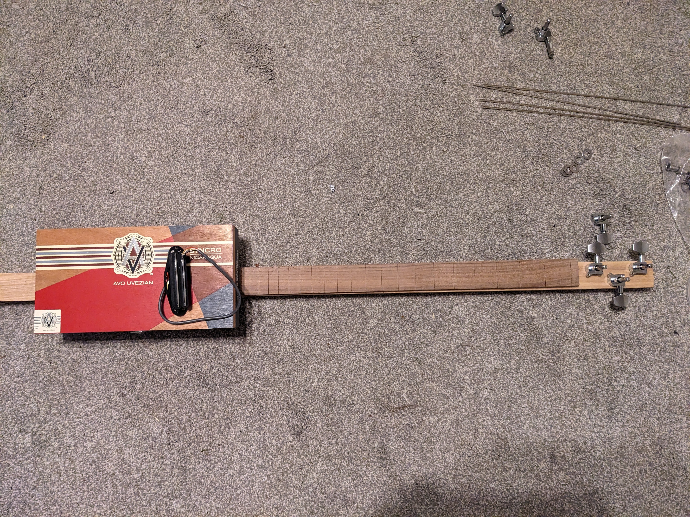
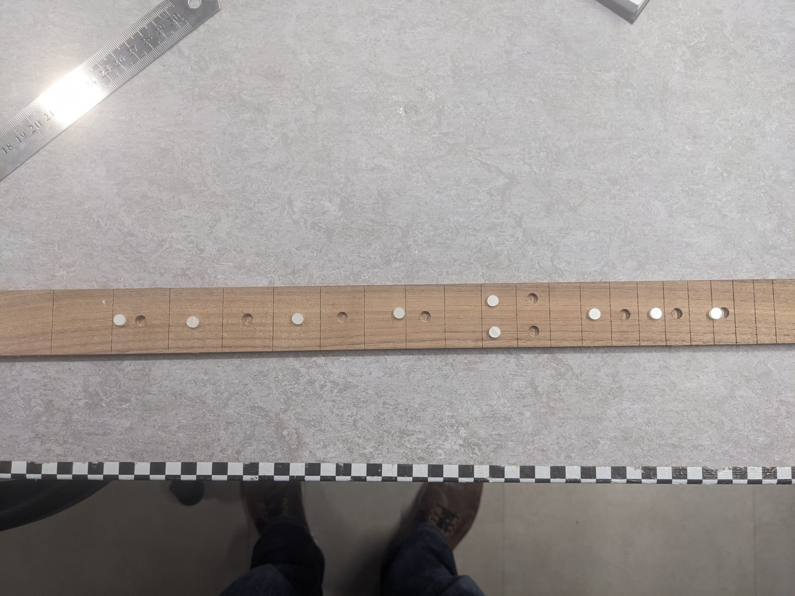
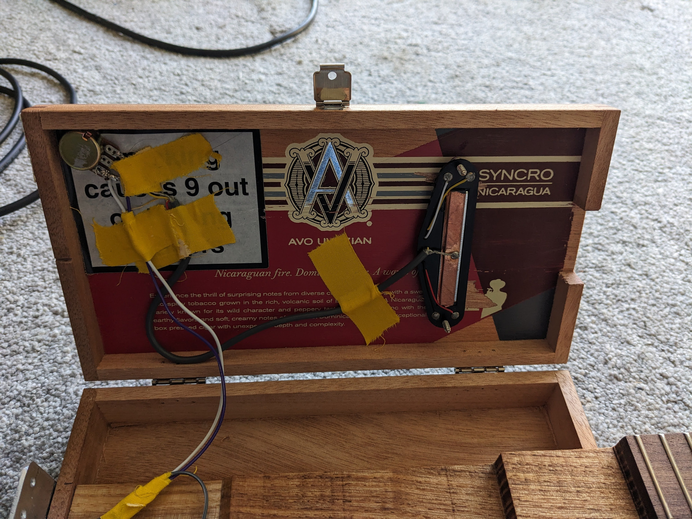

Personal Project
Cigar Box Guitar

Overview
I wanted to play around with slide guitar, so I built myself a 3 string guitar out of an old cigar box. I shaped the oak neck by hand and added a walnut fretboard before attaching it to the box and installing some tuners. I chose to go with a 0th fret and a 2 degree back angle to keep the action consistent whilst keeping build complexity manageable. I then added a hot rail pickup with a simple volume knob. I think it sounds pretty good and definitely looks good on my wall, now I just need to learn how to play it…
Build Photo Gallery


